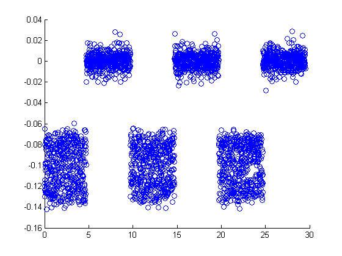
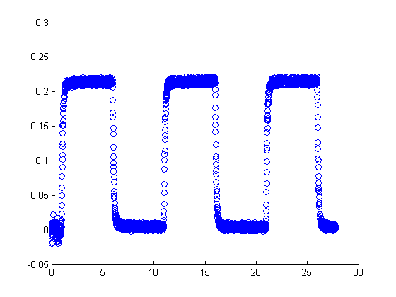
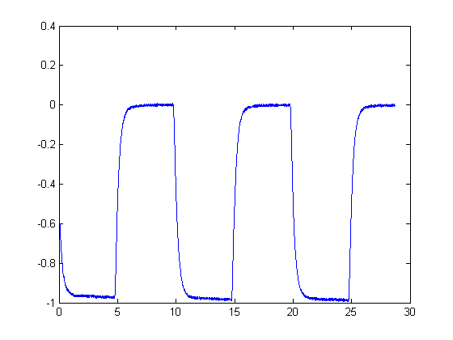
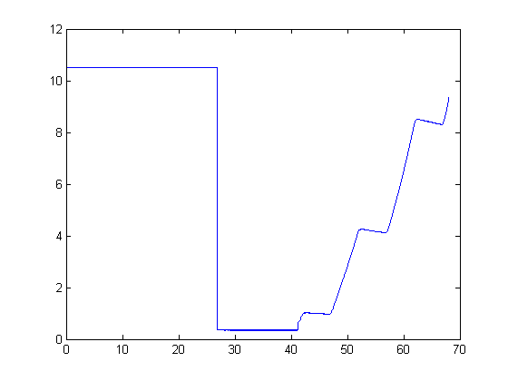
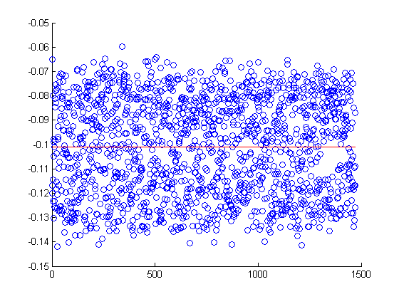
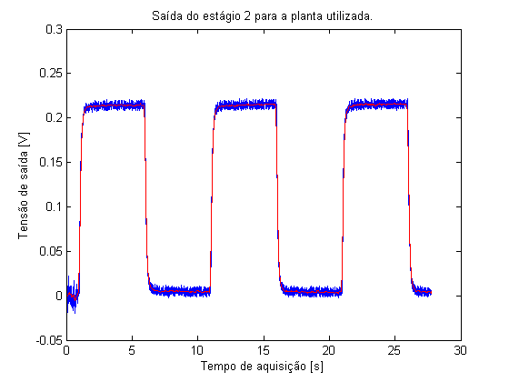
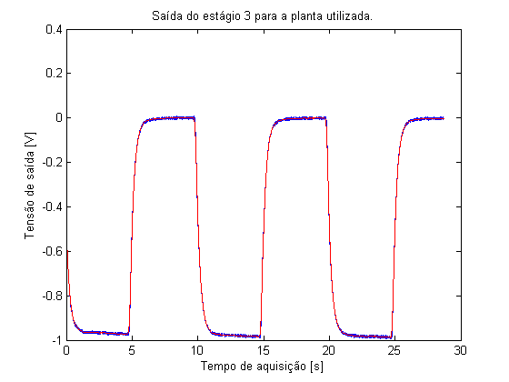

close all; clear all; clc; load matlab.mat t1 = a1(:, 1) * 10e-3; t2 = a2(:, 1) * 10e-3; t3 = a3(:, 1) * 10e-3; t4 = a4(:, 1) * 10e-3; t1 = t1 - t1(1); t2 = t2 - t2(1); t3 = t3 - t3(1); t4 = t4 - t4(1); t11 = a11(:, 1) * 10e-3; t22 = a22(:, 1) * 10e-3; t33 = a33(:, 1) * 10e-3; t44 = a44(:, 1) * 10e-3; est1 = a1( :,2); est2 = a2( :,2); est3 = a3( :,2); est4 = a4( :,2); figure, scatter(t1,est1); figure, scatter(t2,est2); figure, plot(t3,est3); figure, plot(t4,est4); % Maneira de achar meio do degrau "corretamente" % Pego a parte debaixo do degrau indEst1 = find(est1<-0.04); est1l_min = est1(indEst1); trandom = 1:length(est1l_min); figure, scatter(trandom,est1l_min) hold on % fit simples do vetor. [fit1,weight]=polyfit(trandom',est1l_min,0); [fit1p,delta] = polyval (fit1,trandom,weight); plot(trandom,fit1p,'r') % Para a planta 1, a saída degrau é de -0.1011+-0.0198 (fit1p +- delta) % Dei uma procurada sobre o que pode estar causando o ruído forte, e o que % encontrei foi o seguinte: a frequência de 60Hz da rede de energia está % ferrando o nosso sinal. 17 para a função de média rolante não é % aleatório, é na verdade uma tentativa de eliminar a influência desses 60 % Hz (taxa de amostragem = 1000 Hz, ta / freqruido = ~17 pontos de largura % do período). Pra entender melhor: % http://www.mathworks.com/help/signal/examples/signal-smoothing.html figure, plot(t2,est2); hold on plot(t2,smooth(est2,17),'r'); title('Saída do estágio 2 para a planta utilizada.') xlabel('Tempo de aquisição [s]'); ylabel('Tensão de saída [V]'); % Tau2 encontrado por datatips tau2 = (11.54 - 10.88)/4 figure, plot(t3,est3); hold on plot(t3,smooth(est3,17),'r'); title('Saída do estágio 3 para a planta utilizada.') xlabel('Tempo de aquisição [s]'); ylabel('Tensão de saída [V]'); k3 = -0.9854; a = -0.1105 / k3; b = -0.4372 / k3; poly = [1 -(1-b-exp(-2))/(1-a-exp(-1)) ((1-b)*exp(-1)-(1-a)*exp(-2))/(1-a-exp(-1)) ]; rpoly = roots(poly); tau3 = rpoly(1)
tau2 =
0.1650
tau3 =
0.4417






